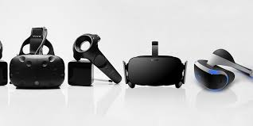

Extended Reality (XR) refers to all combined real and virtual environments and man-machine interactions, and is therefore, to be understood as the “reservoir” for representative forms such as Augmented Reality (AR) and Virtual Reality (VR) and the interpolated areas between them.
Virtual reality is a simulated 3D environment that enables users to explore and interact with a virtual surrounding in a way that approximates reality, as it is perceived through the users' senses
Augmented reality (AR) is the real-time use of information in the form of text, graphics, audio and other virtual enhancements integrated with real-world objects.
XR stands for “extended reality,” an umbrella term that covers VR, AR, and MR. All XR tech takes the human-to-PC screen interface and modifies it, either by 1) immersing you in the virtual environment (VR), 2) adds to, or augments, the user’s surroundings (AR), or 3) both of those (MR).